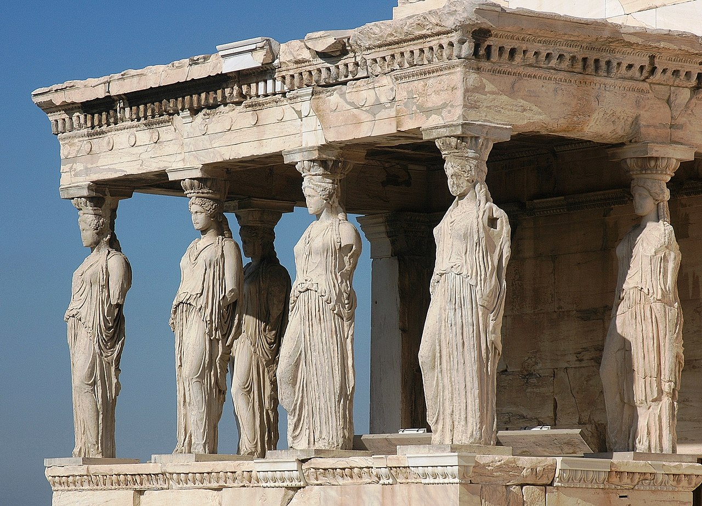
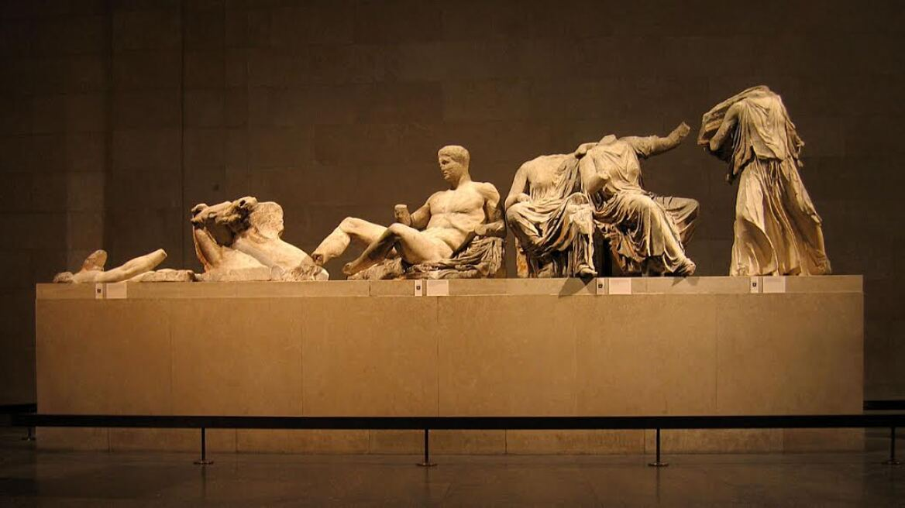
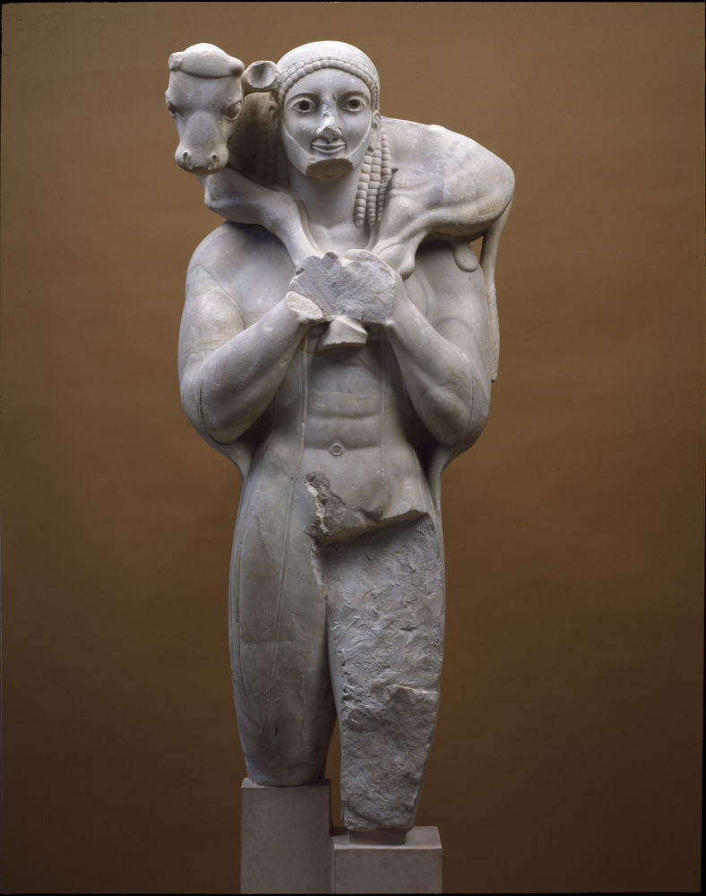
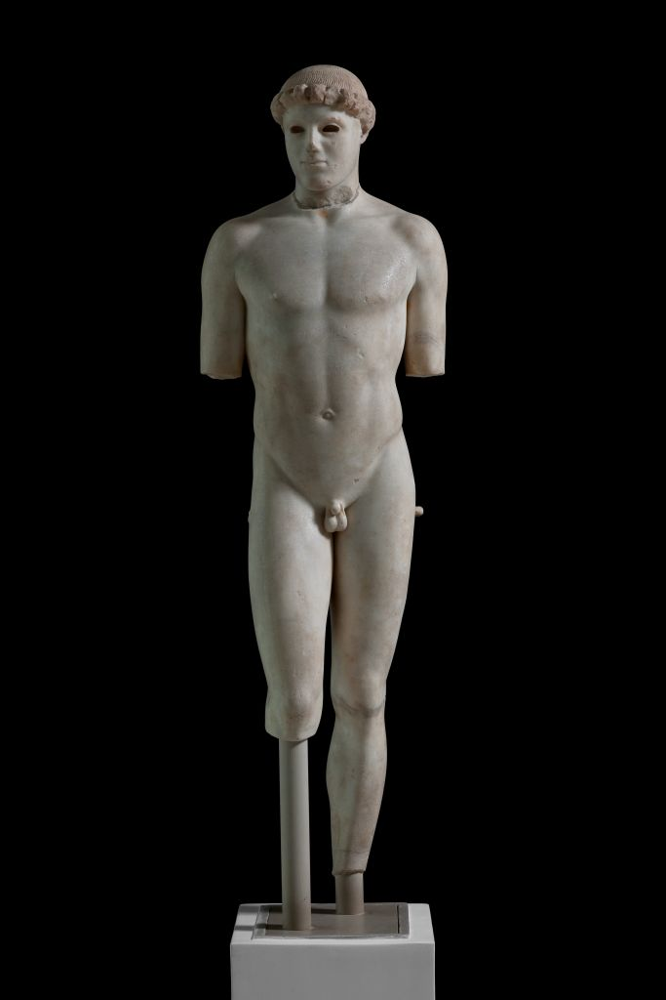

Σημαντικά εκθέματα
Παρακάτω παρουσιάζονται τέσσερα από τα σημαντικότερα έργα που συνδέονται με την Ακρόπολη και παρουσιάζονται στο Μουσείο Ακρόπολης.
1. Καρυάτιδες

Οι Καρυάτιδες είναι γυναικείες μορφές που λειτουργούν ως αρχιτεκτονικά στηρίγματα στο Ερέχθειο της Ακρόπολης. Οι μορφές αποτελούν χαρακτηριστικό παράδειγμα της κλασικής ελληνικής γλυπτικής.
2. Παρθενώνας - Γλυπτός διάκοσμος

Τα γλυπτά του Παρθενώνα αποτελούν ένα από τα σημαντικότερα σύνολα της αρχαίας ελληνικής γλυπτικής. Περιλαμβάνουν μορφές από τα αετώματα, τις μετόπες και τη ζωφόρο του ναού.
3. Ο Μοσχοφόρος

Ο Μοσχοφόρος είναι ένα αρχαϊκό άγαλμα που απεικονίζει έναν άνδρα να μεταφέρει ένα μοσχάρι στους ώμους του. Χρονολογείται περίπου στις αρχές του 6ου αιώνα π.Χ.
4. Ο Κριτίου Παίς

Ο Κριτίου Παίς αποτελεί σημαντικό έργο της πρώιμης κλασικής γλυπτικής. Το άγαλμα παρουσιάζει έναν νέο άνδρα σε φυσικότερη στάση, σηματοδοτώντας την εξέλιξη από την αρχαϊκή προς την κλασική τέχνη.